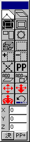
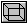
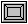
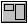
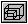
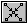
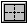
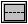

★Graphic Tools Guide
★3DMEユーザーズマニュアル
★Graphic Tools Guide
★3DMEユーザーズマニュアル
 |
 | 移動 |
 | 拡大 | |
 | 変形 | |
| 回転 | ||
 | 拡大 | |
| 選択 | ||
| 選択追加 | ||
| 選択削除 | ||
 | 頂点結合 | |
| 頂点追加 | ||
| ポリゴン追加 | ||
| ＢＯＸ追加 | ||
| スケール移動 | ||
| スケール拡大縮小 | ||
| パースペクティブ時回転 | ||
| やりなおし(UNDO) |
| 移動 | ||
| 選択 | ||
| 選択追加 | ||
| 選択削除 | ||
| 頂点回転 | ||
| ポリゴン裏返し | ||
 | ポリゴン4分割 | |
 | ポリゴン2分割(横) | |
| ポリゴン２分割(縦) | ||
| 選択ポリゴン削除 | ||
| ポリゴン追加 | ||
| ＢＯＸ追加 | ||
| スケール移動 | ||
| スケール拡大縮小 | ||
| パースペクティブ時回転 | ||
| やりなおし(UNDO) |
★Graphic Tools Guide
★3DMEユーザーズマニュアル